System settings
Setting up the whole system.
Not included in jackpot server settings
Some settings require a restart of the program to take effect.
Some of the settings are individual for each program,
others are common to the whole system
Check out all the settings in detail
The settings related to the program only are located in colibri/colibri.conf
If you reinstall the program, copy colibri.conf
After reinstalling, return it to the colibri/
directory
This will save your settings
Do not change the path or partition of the program
When changing a partition or path, register a POS terminal
System
System settings regarding the mode of operation.
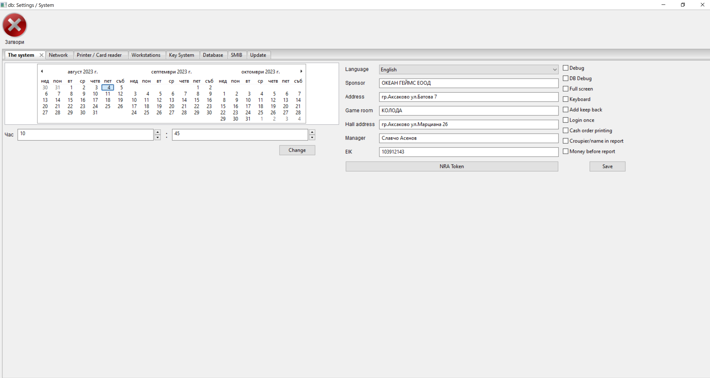
Date and time
The date and time are extremely important for the program.
In case of wrong date and/or time, the program will not start.
Please make sure the date and time are correct before using the program.
Ideally, the system checks the date and time from the Internet.
When the Use RTC option is set the program will synchronize Date and Time with the server.
In case the program does not start you can adjust Date and Time from the options of your OS.
For small deviations, use the calendar and fields for an hour and a minute. Press Record
Attention!
With a terminal manufactured by us, make sure the option Use RTC is enabled.
Debug
The option is used by Programmers to detect errors. It opens a small white window describing the error. When this option is disabled, errors are saved in a log file.
In case of critical errors please send colibri/colibri.log to Grigor Kolev
The window cannot always be closed
Exiting a window does not mean a critical error and/or bug in the system
We recommend deactivating the option in run mode.
DB Debug
Database debugging. Used by programmers to fix errors in the database. In case you activate this option all communication with the database will be saved in colibri/colibri.log
We recommend disabling the option in run mode.
Full screen
The system will open in full screen. Shutting down the system will not be possible.
It will not be possible to open any other program in OS
If you need to stop, use the Restart button
Keyboard
It will show a virtual keyboard for touchscreen devices. Do not activate it on a computer with a hardware keyboard.
Enroll withholding
If you activate this option, all withheld Bonus Cards and Customer bonuses will be credited to the croupier's coffers.
Sometimes the croupiers can't figure out which bonuses are Helled. Please use quick reference
Login once
Indicates to the system that a user can only log in once. If the session from another program is not closing, entry will be impossible.
There are cases (Electric shock, incorrect program shutdown, code error) when a user will be left with a locked session.
Use login form or deactivate session from user settings
Cash order printing
Prints cashier's order for disbursement. Otherwise, they are handwritten by the croupier. A POS printer is required.
Croupier/name in report
Removes the croupier's name on the daily report so that the croupier does not have to write his name manually. Filed with the NRA, use real names.
Money before report
This option requires the croupier to make a detailed inventory of the money he has before counting. The statement of the required amount collected will not be displayed until after completing this step.
NRA Token
Special token for connection with NRA. It is issued by the National Revenue Agency at the company's request. For more information and issuance of such a token, contact the NRA
Language
The system will load the selected location along with all the pillars.
In case you want to add a new language and/or change a template and/or message, see System Localization
Organizer
Used to print daily report
Address of the organizer
Used to print daily report
Game room
Used to print daily report
Game room address
Used to print daily report
Manager
Used to print daily report
Network
Connection settings
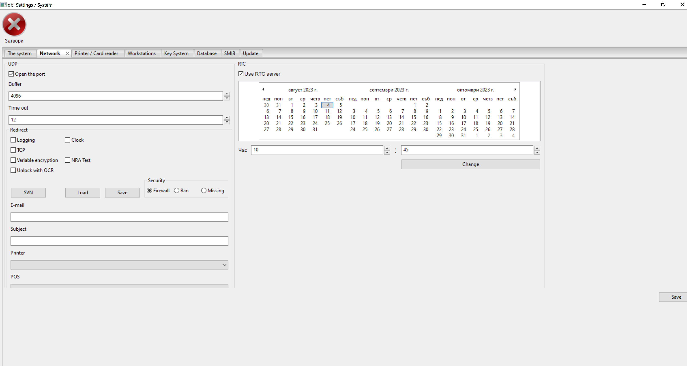
Communication Section
Open Port
If the server firewall is active, this option is required, otherwise connection to the casino will be impossible.
We recommend the use of a firewall, it restricts any access to the system not passed through
encryption algorithms. The encryption algorithm can be unique for each client
contact Grigor Kolev
A change in the encryption algorithm is paid extra and is not included in the initial price.
With an active firewall, the system records each IP that is accessed, and each IP can to be banned.
Buffer
Do not change without consulting Grigor Kolev
An individual buffer will increase the security of the entire system.
A change in the buffer is paid additionally and is not included in the initial price.
Time out
The time in which the server expects a response from the other elements of the system (Jackpot server, SMIB, Preview)
Do not make the time less than 10. You can increase in case of slow internet.
Consult Grigor Kolev
Redirect Server Section
A redirect server plays a very important role in the whole system. This is where all the information is contained. The redirect server is also responsible for connecting to all SMIB controllers and setting up the Jackpot server.
The server inserts remote programs into the casino network. Responsible for the implementation of everything related to client module
Load
Loads Redirect Server settings
Record
Saves the settings to the Redirect Server
Gmail option
The redirect server has a built-in e-mail server, but can also use gmail to send messages.
We recommend using Gmail
Please check the SPAM folder before contacting Grigor Kolev
If necessary, set up a filter in your email.
Logging
Activates an error recording server. The server will take any error from each SMIB controller and will save it to the base daylight. Take a look
You can disable the loggin server and redirect all errors to a computer on Service
Contact Grigor Kolev for a remote computer debugging tool.
Clock
Usually, the server is checked via the Internet, but in the absence of such it uses an RTC module.
Clock mechanism that will adjust Date and Time
The server will synchronize the Date and Time of the entire system.
Attention!
Make sure the RTC module is placed correctly on the
server Make sure that the RC2032 battery of the RTC module is working.
TCP
Uses TCP protocol instead of UDP, which is the default
Variable encryption
Dynamically changes the encryption after each request. This function complicates the encryption and puts it into a changing key and randomly generated vector mode
NRA Test
Test server to NRA for developers. Used only by the developer.
Unlock with OCR
Enables the ability to unlock with an ID card reader.
SVN
Remote access function (remote control) of the program.
Firewall
Activates the firewall of the redirect server.
Ban system
Outdated technology. Relies on logs and imposes a ban for 24 hours with 3 times entered wrong password.
It will be removed in future revisions.
Please use Firewall
No protection
Disable all server security features.
Attention!
Do not deactivate the protection if you are not sure what you are doing.
The machines will signal a win or cashout to the specified e-mail Look
Subject
When a profit signal is given, it is used to recognize the various casinos
Printer
The system can be set up, all the print to go through the server and go to one printer. The printer must be hooked up and set up on a redirect server. Contact Grigor Kolev for more information
POS
Selection of POS (Point of sale) printer, if available. They are most often used for fiscal notes but can be used for other purposes as well
RTC section
Real Time Clock module
Attention!
Make sure the RTC module is placed correctly on the
server Make sure that the RC2032 battery of the RTC module is working.
Use RTC
Instructs the system to synchronize Date and Time with the server each time it starts.
Recommended for POS terminal manufactured by us.
Check RTC Date and Time
Use the Calendar and the fields Hour and Minute to update the RTC Module.
Attention!
Make sure the RTC module is placed correctly on the
server Make sure that the RC2032 battery of the RTC module is working.
Printers and Readers
Printer and reader settings
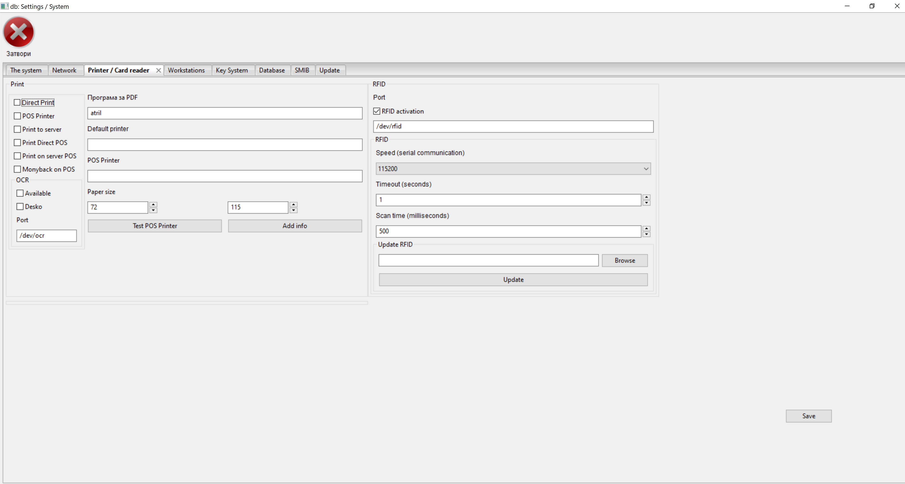
Attention!
Requires installed wkhtmltopdf
For Window, add C:\Program Files\wkhtmltopdf\bin in the search path and reboot
For Debian or Ubuntu use apt install wkhtmltopdf
If you have difficulty installing wkhtmltopdf, contact Grigor Kolev
Direct printing
I will print the required document directly on the selected printer.
Attention!
On Windows, share the printers
Do not use spaces in sharing names.
If the option is not selected, it will open a PDF document in the reader of your choice and you can do print through reader options.
POS Printer
Activates the POS printer for printing raffle coupons.
Attention!
POS Printer must be in Printer mode, will not work in Serial port mode
We recommend using Citizen CT-S2000
Use a POS terminal manufactured by us to connect a POS printer
Print to a server
Specifies whether the program will print to a local printer or to a remote printer attached to the server.
In case there are many POS terminals in one casino, connect the printer to the server and select the option. This will allow all POS terminals to use the same printer.
You can use a shared printer or an Internet printer. Contact Grigor Kolev
Attention!
We recommend using a printer with Linux ARM drivers
PDF program
-
For Linux
Enter the name of your favorite program for reading pdf documents
-
For Windows
Enter the path of the installed program for reading pdf documents
Use the right mouse button on the link of the preferences icon pdf reader and select Proparties
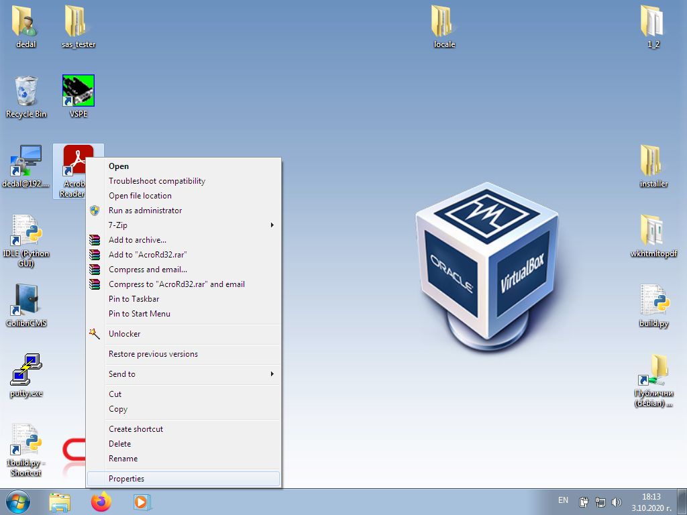
Copy the text and paste it into the box

Restart the program.
Default printer
Select a local printer to print all Linux documents.
For Windows, enter a shared printer name without spaces. See Printer Sharing
Attention!
Use the Direct Print
option when active Will load all printers installed in CUPS
For Windows, enter the shared printer name you specified
POS Printer
Select the default POS printer
Must be installed in CUPS
For Windows, the printer must be shared. See Printer Sharing The shared printer name must not contain spaces. Enter the name of the shared printer in the field.
Paper size of POS Printer
The system is set up for Citizen CT-S2000 with 80 mm width and 110 mm coupon length.
For a different printer, play with the numbers until you get the right size.
Use the Test POS Printer button to see if the print is positioned relative to the paper.
Test POS Printer
Print test on POS printer
Add Info
Sets information to be printed on a POS printer.
It opens
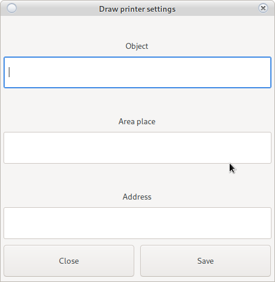
These are the first 3 lines printed on the coupon.
Please note the paper size, it is not possible to print 1000 symbol symbols on 80 mm paper.
Use the Test POS Printer button to see if the print is positioned relative to the paper.
RFID Reader Section
Setting up and operating an RFID reader
All readers must be in Serial Port mode
Use the RFID reader documentation to change the mode as needed.
Activate reader
Instructs the system to use an RFID card reader.
If you have any difficulties, contact Grigor Kolev
RFID reader port
-
Linux
/dev/ttyACMХ or /dev/ttyUSBX
-
For Windows
comX
Replace X with the port number.
Communication speed
Select the speed at which the serial port operates
Time out
The time in seconds at which the reader will generate an error for missing a card
Scanner scan time
Time is in milliseconds. The reader will check for a card every 500 milliseconds.
Not all readers support this feature
Contact the RFID reader manufacturer
Workstations
Installation of workstations.
In case a certain computer is not installed in the database, the system will not allow connection.
Or if you install the program on your computer on Manager 1 it will not be able to to connect with Casino 2
If you leave a manager, remove the computer from the POS terminals to revoke access.
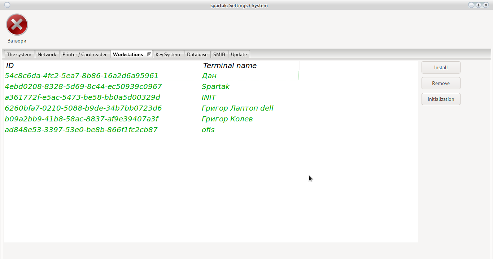
Install
Authorization of POS Terminal
If the POS Terminal is not authorized to operate in the respective casino, then the connection to the database will be impossible.
Every computer working with casino information must be authorized.
Use the Install button
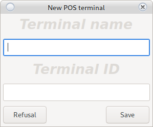
Enter a name to identify the computer.
Enter Code sent to you by E-Mail and use the Save button
When reinstalling a computer or changing the path of a program
the system will request a new registration at a POS terminal
Move
In addition to deactivate user, remove the POS terminal on
managers. Also, make sure the manager is logged in and drop it.
If the Login once option is not enabled, restart the server,
this will close all active sessions.
Initialize
In case you forget the names of the POS terminals use Initialization
Button will remove all POS terminals except Your
Kay System
Kay System Settings
Requires a working RFID reader
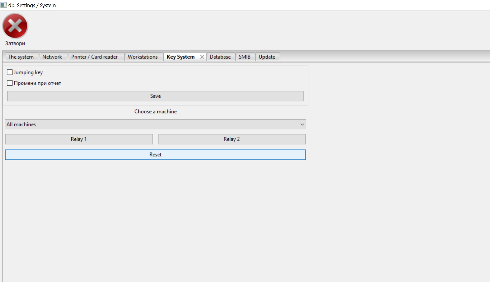
Jump code
It will make the quay system of the machines work only with the dealer's card which is started change in selected region
Use Record to change the settings
For proper operation, remove the many keys option from the settings on each SMIB controller.
Промени при отчет - Report changes
Only for users with administrative rights. Can change the daily report if needed.
Relay recording 1
Requires a working RFID reader
Depending on the location of the cables, it will record OWNER or ATENDANT
In case of error, you can rotate from SMIB settings
Relay recording 2
Requires a working RFID reader
Depending on the location of the cables, it will record OWNER or ATENDANT
In case of error, you can rotate from SMIB settings
Reset
To reset the settings, use the Reset button
Database
Database prevention and cleaning system
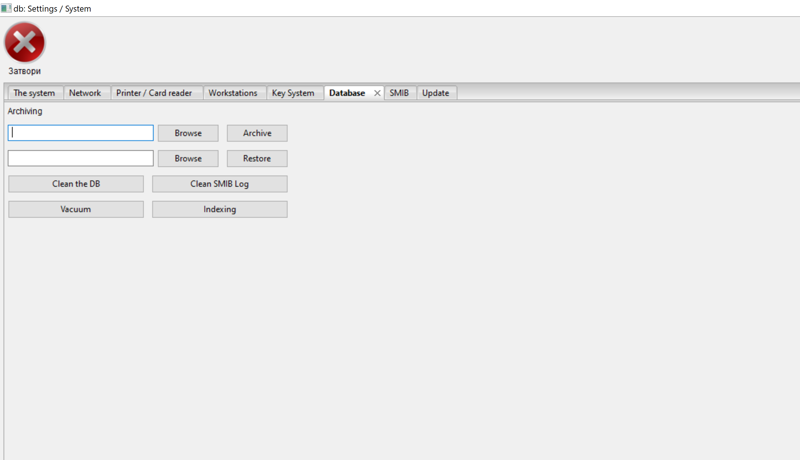
Pg_dump is required for archiving
To return pg_restore
Install postgresql
For Linux
apt-get install postgresql
For Window
https://www.postgresql.org/download/
Add in the search path
Database backup
Select a directory to create an archive.
We recommend backing up to a remote computer after each daily report.
Restore from archive
Select an archive and return the information to the database.
Will remove everything saved after the archive date
Clear Base
Removes all information older than one year - 1 day
Be sure to back up the database
Vacuum Base
It will speed up the database.
It will not affect the information.
It may take a long time.
New Indexing
It will speed up the database.
It will not affect the information.
It may take a long time.
Clear SMIB log
Removes all error information in SMIB controllers and report logos.
SMIB
SMIB Controller Settings
From the drop-down menu, you can load the settings of only one machine or overwrite all.
Attention!
In case of overwriting all machines you need to make sure they have the same hardware
The hardware must be docked on the same ports
Figure 1
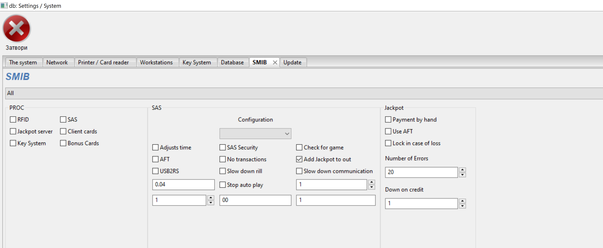
Figure 2
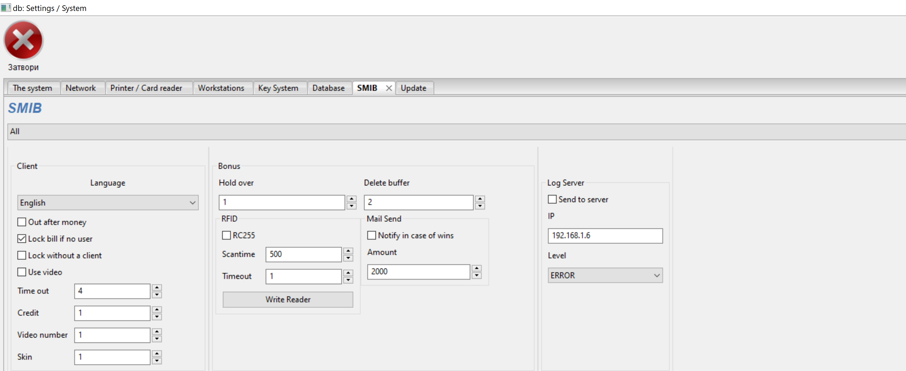
Fig. 3
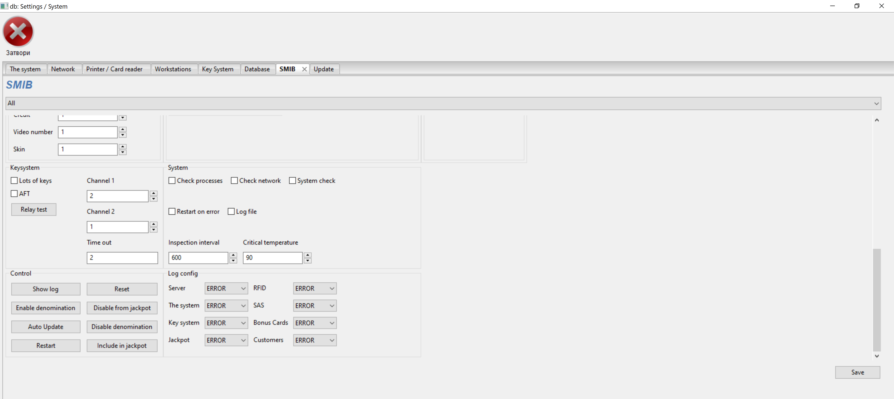
Section PROC
Section defining the running processes in the SMIB controller.
Each option corresponds to a process.
Removing the Jackpot Server option will block the deduction of the respective machine to the mysteries.
Removing SAS will stop the SMIB controller from connecting to the machine.
Be careful when stopping and running processes
You need to know which process depends on __SAS__ and which on __RFID__
SAS Section
Setting up the SAS protocol
Configuration
In 95% of cases, it is enough to choose EGT
This setting will work on almost any machine you encounter.
A big exception is the company Casino Technologies which refuses to read the SAS protocol of IGT and do whatever they decide.
It is interesting with Casino Technologies that there are no two versions of one machine that work in the same way.
We have tried to set automatic settings on each version of their machine that we have.
We do not take responsibility for whether they work and how.
If you encounter different versions or other manufacturers refusing to read the SAS protocol
play with the times and options in this section.
Please if you hit, send us Model and version of the machine and a picture of the settings to add them in the auto setup menu.
Check date and time
The SMIB controller will synchronize the Date and Time of the machine with its own at each restart.
SMIB Controller synchronizes with RTC module
You can disable this option without affecting the operation of the system
AFT
Indicates to the SMIB controller that AFT is enabled on the machine.
The controller will use AFT whenever possible.
SAS Security
If the option is active the system will protect the Legacy bonus
When pouring a bonus without the participation of the SMIB controller, the machine will be locked.
To unlock View
AFT Key 34
In very rare cases, 1 per 100,000 AFT communication requires activation of the option
Check for play
Recommended option. Checks if there is a selected game and its number.
Casino Technologies refused to write it in the new versions of the machines they produced.
Stop the option in case of a bonus problem.
USB2RS
The system will use a USB adapter instead of standard serial communication.
Entertain Rill
Part of the security system
If the machine or SMIB controller is restarted, it will slow down the rotation of the reels.
The reels will return to standard mode after 3 minutes with a loan over BGN 1
On some machines, it will block the autoplay button (will work as a start)
Slow down communication
The SMIB controller is 100 times faster than the machines of Casino Technologies with ARM and we have to put it to sleep.
0.4 == 400 milliseconds
Use the adjustment field
Stop Auto Play
Part of the security system
If the amount returned as a profit exceeds field 1 the controller will slow down the reels and/or block autoplay button for minutes from field 2
When setting field 2 with a value of 0, the roles and/or blocking of the autoplay button will stay until manual play
SAS machine number
The new machines of Casino Technologies refuse to say their number according to SAS protocol
Enter it manually __Example: 01, 02, 03, ...___
SAS timeout
Time in seconds after which the serial port will generate a missing connection error.
In 95% of machines 2 seconds is optimal
At Casino Technologies, raise it if necessary.
Jackpot section
-
Payment by hand
The mysteries will not fall into the credit of the respective machine. With Casino Technologies you may need to use this option.
-
Use AFT
In very rare cases, AFT communication requires the option to be enabled. It is activated only when necessary.
-
Lock in case of loss
In case the machine does not connect to the jackpot server in 20 consecutive attempts, then it will be locked.
If the server fails, disable this option so that not all machines are blocked.
During normal operation, it is good for the option to be active. It will notify you of a communication problem.
Adjust the number of consecutive losses to be able to restart the server without blocking the entire casino.
-
Fall on credit
If the credit of the machine is below the specified amount in BGN, then winning a mystery is impossible.
Client section
Client module settings
-
Out after money
If the credit is not above the amount required for scrolling, it does not allow out. Example: a BGN 10 bonus falls and BGN 20 is required for a cashout. With a tick, it can be made to BGN 20 and the game can continue even if it drops to BGN 10. Without this tick, you are out or lose.
-
Lock bill if no user
It is locked if there is no customer card
-
Lock without a client
It will not allow the machine to be played without a customer card inserted
-
Use touch
The machine is equipped with a touch to select bonuses
If you remove this option make sure you have AFT active
-
Lock without client
It will not allow the machine to play without inserting a client card
-
Use video
Choose whether to display an ad clip on the machines
-
Time out
Time after which the client will be deleted when removing the card
-
Credit
Once the loan falls below the specified amount, a bonus will open.
Inactive AFT to drop the bonus will require 1-2 spins
Comply with machine ratio.
-
Video number
Choosing exactly which ad video to show in order.
-
Skin
SMIB controller skin / theme selection. The two themes are available blue and yellow.
-
SMIB controller logo
You can make your own logo to replace the hummingbirds at the bottom left of the SMIB controller.
Logo integration is not included in the price for more information contact Grigor Kolev
Bonus section
Manages bonus cards
-
Hold over
The amount above which a cashout bonus will be deducted.
Take a look:
Hold bonus cards
Customer Bonus Withholding
Settings/System -
Delete Buffer
The time in seconds during which the next bonus cannot be added
RFID section
Sets the RFID reader of the SMIB controller
-
RC255
It should be selected in case the controller is RC255 type
The Save Reader button changes the scan time
Not supported by all RFID readers. Please contact the reader manufacturer for more information.
SendMail section
The SMIB controller will notify the owner of a win or cashout above the specified amount
LogServer section
-
Discharge to server
All errors generated by the SMIB controller will be sent to the server
-
Server IP
When logging server is activated. Use 192.168.1.6
If you want to send errors to a remote computer, enter the IP of service
-
New
Select the level of errors to be saved
KeySystem section
Management of the Kay System
-
Many keys
By default, the system only works with one key at a time.
Activating the option will allow up to 5 keys saved simultaneously
If the limit of 5 is exceeded, the first entry will be removed.
Please check Kay System and Users
Before you decide on how to work. -
AFT option
Will activate customer cash
-
Test Relay
Will test whether the relay is connected correctly and the sequence of cables for OWNER and ATENDANT
-
Relay channels
If the cables are installed incorrectly, you can quickly swap places by changing the numbers
1 becomes 2 and vice versa
We do not advise such a change. It will confuse you if you program Kay System on all machines
-
Time out
Relay opening time. Or how long for the relay to pause the machine after removing a key to put credit
System section
System monitoring mode activated. No need, use only pro problems with the machine, switches or SMIB controller.
-
Verification processes
Checks if all processes are working. Restart them if necessary
-
No check
Checks for connection to Redirect Server and
Jackpot server and attempts to repair the Lan port -
System check
Checks the power supply of the map and the temperature in the box. At high temperatures, it will turn off the CPU cores in series to protect the SMIB controller. Will report a problem.
-
Check interval in seconds
Time during which to check the system
-
Critical Temperature
The temperature at which the CPU cores begin to block
-
Log File
The SMIB controller will also record all errors in its own log file, not only in logging Server
Control Section
Quick control of the SMIB controller
-
Show Log
Displays the errors recorded in the SMIB controller
-
Include denomination
Select a machine game to turn denomination off.
For machines of Casino Technologies is not possible.
-
Stop denomination
Disables the ability to play on a particular denomination. Select a game and the desired denomination to deactivate and press the button.
It will not be possible to play the respective denomination if it is not reactivated.
For Casino Technologies machines it is not possible to stop denomination. The whole game will disappear from the screen if the machine is an old version (launch is possible after reset of SMIB controller and machine restart) In case of a new machine of Casino Technologies the function does not work.
-
Reset
Resets the SMIB controller. All quay system cards and bonus cards will be removed. All SMIB controller settings will be deleted. IP of SMIB controller will not be changed
-
Turn off the Jackpot
The selected game will not count on the Jackpot server
Example: Tape measure
-
Turn on the Jackpot
If a game is turned off by jackpot server you can turn it on again
-
Auto update
Only this SMIB controller will update
-
Restart
LogConfig section
Changes the error recording levels of each process.
DEBUG and INFO are used by programmers
WARNING is in case you have suspected irregularities
ERROR will only record errors
CRITICAL System-critical errors (Burned RFID reader)
If you set WARNING all higher status messages such as ERROR and CRITICAL will be saved
Be careful with the level selection, it can overflow the memory of the SMIB controller and/or The logging server database
Update
System update
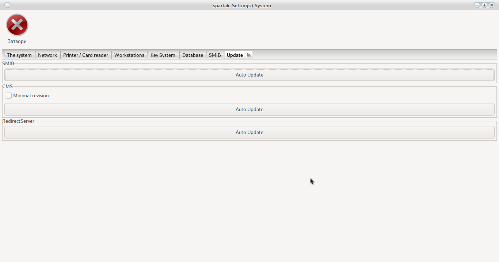
SMIB
It will update all SMIB controllers until the selected revision
Leave blank in case you update to the last possible revision
CMS
Updates the reporting program
The Minimum Revision option will force all reporting programs connected to the casino to catch up with this revision
An additional update program starts in Windows OS. From the aging window as administrator select Yes and wait. After the command prompt writes Press any key to close! Press any button and start the program again.
Attention!
Check the revision HereAttention!
If the OS tells you that the program does not respond
Select: Wait
RedirectServer
Will update the Redirect Server
Please contact Grigor Kolev before updating.
When changing the database, migration is required and it is possible that Redirect Server yes does not start after update.